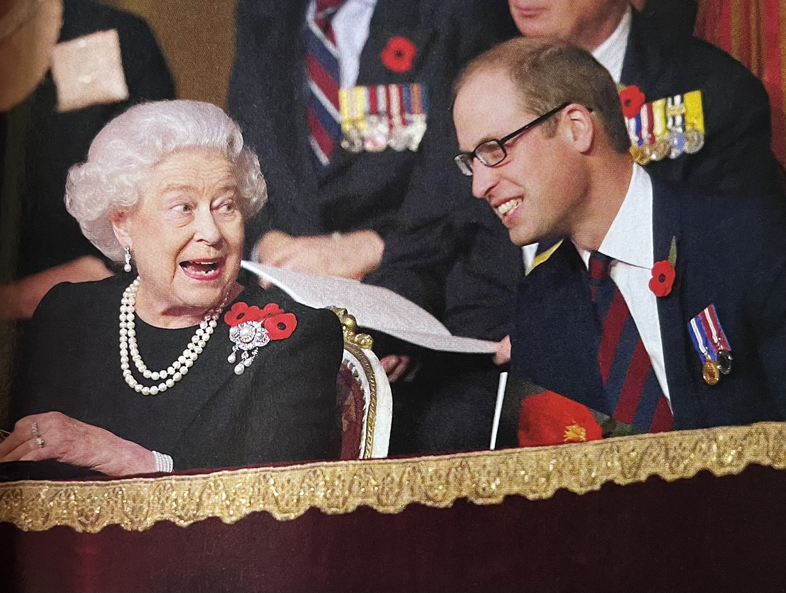
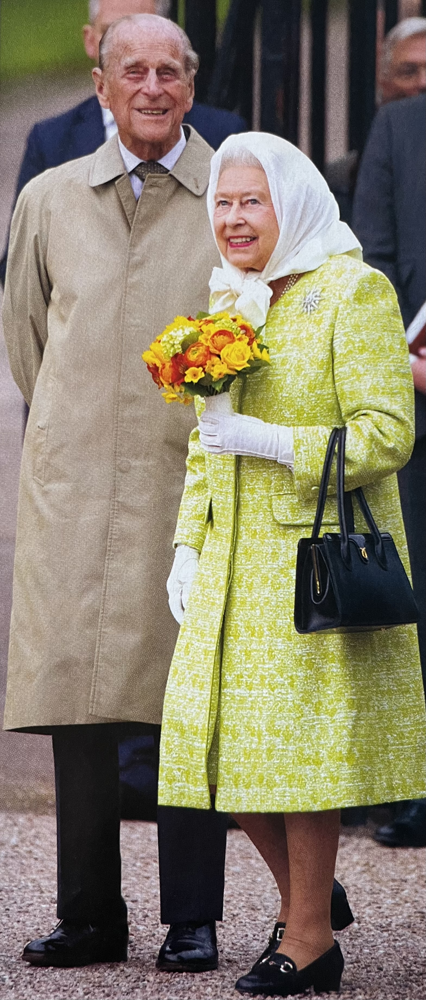
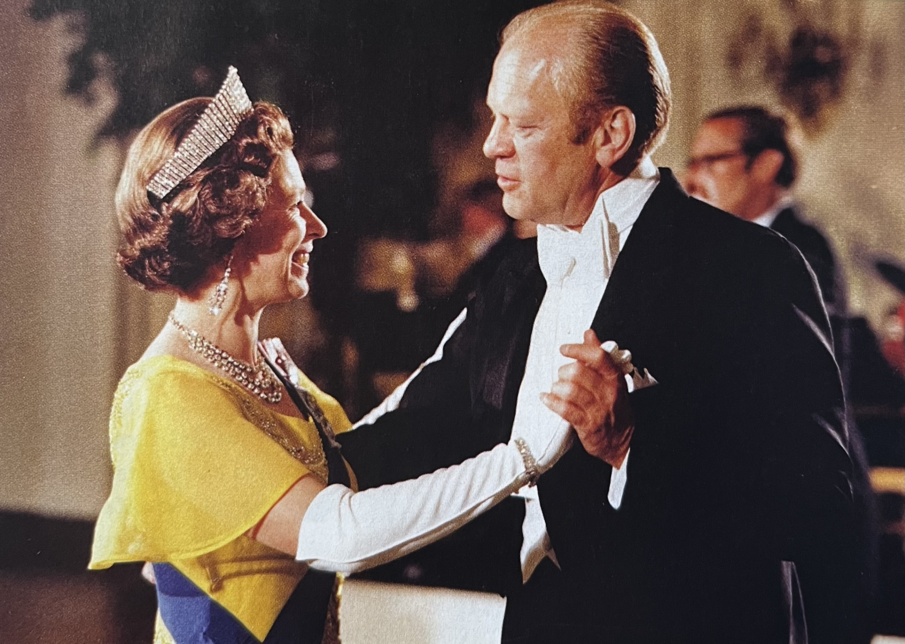

|  |  | |
Celebraciones con la Reina Isabel IIAunque la vemos siempre con esa expresión muy inglesa, seria e inamovible, ahora que la reina Isabel II lleva 64 años en el trono y ha cumplido 90 años de edad, los amigos y familiares se han relajado y han comenzado a hablar... y los cuentos y anécdotas que relatan proyectan una imagen muy diferente de la soberana. Muchos creen que la reina solo muestra severidad cuando sus caballos ganan carreras, pero a ella le encantan las fiestas. Cuando las organiza su prima lady Elizabeth Anson, en los preparativos se refieren a Isabel II con el sobrenombre de "Shirley Temple", y dicen que no solo sugiere la comida, la bebida que prefiere es el famoso "mucho champán helado, que nunca falte" y las cosas que más le divierten, como la música, porque le fascina bailar. Una noche, John Louis Jr., el embajador de los Estados Unidos en el Reino Unido, bailó tanto con ella después de una cena oficial, que confesó que al día siguiente "el dolor de espalda de estar..." |
||
|  | ||
|
Arriba, a la izquierda: La soberana de Inglaterra con el príncipe William en el Royal Albert Hall, en Londres. |
||